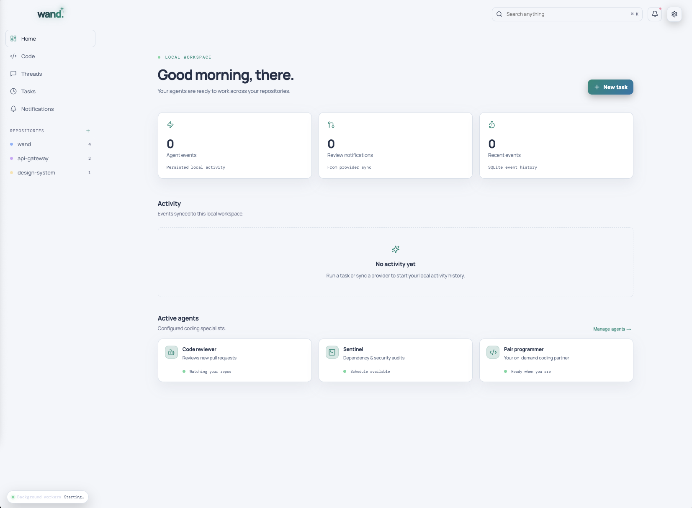

Compose your team
Import workflows or configure agents with their own responsibility, skills, CLI runtime, model, and repository scope.
LOCAL-FIRST AI ENGINEERING
Wand brings your coding agents, repositories, tasks, reviews, and background verification into one calm desktop workspace.
YOUR ENGINEERING CREW
Tag the right specialist, let each stage hand off its findings, and keep a verifier running in the background until the work is truly done.
Import workflows or configure agents with their own responsibility, skills, CLI runtime, model, and repository scope.
Every repository gets a persistent chat, activity timeline, task history, and a VS Code-style diff surface.
Recurring tasks, provider sync, handoffs, and final verification run locally with durable SQLite history.
INSIDE WAND
Designed to fit the way engineers actually work: focused, responsive, and ready when you are.

START YOUR NEXT RUN
Download the latest signed release for your platform. Wand checks GitHub Releases for updates and asks before installing anything.